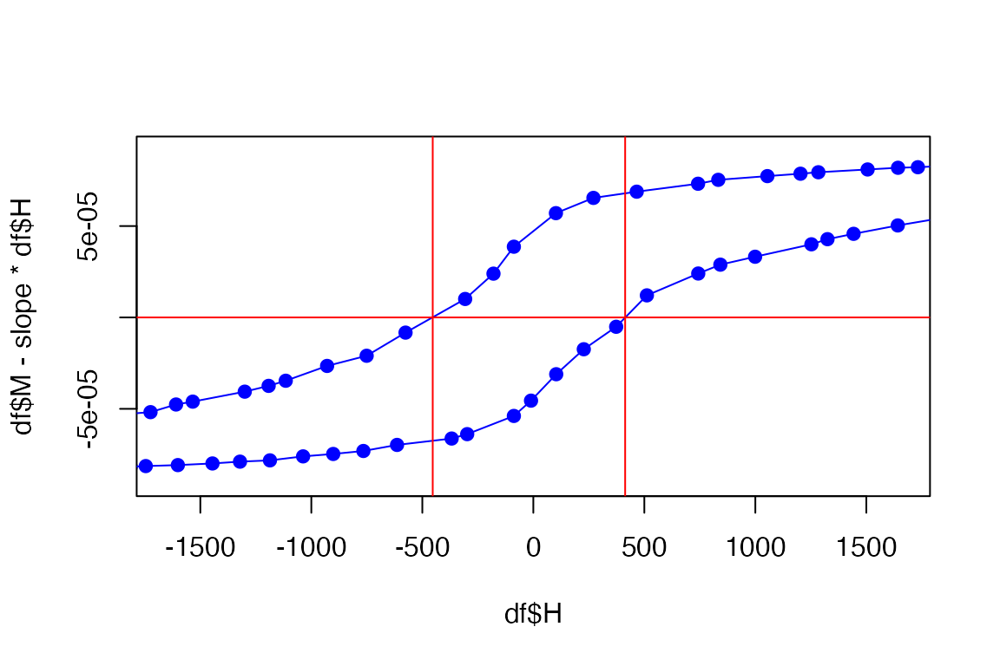

Coercivity.Rmd
library(quantumPPMS)The coercivity can be estimated from the versus curves. Here is an example to retrieve the coercive field values; note that in this example, the diamagnetic background has not been removed, so the result should be interpreted accordingly
filename = vsm.getSampleFiles()[1]
d = vsm.import(filename)
d1 = vsm.getLoop(d, lp=1, direction=1 )
df = vsm.data.frame(d1)
Hc = vsm.get.Coercivity(df$H, df$M)
print(paste("Coercivity is ", signif(Hc,3),"Oe."))
#> [1] "Coercivity is 428 Oe."Let us check whether the value agrees visually:
plot(d1)
filename = vsm.getSampleFiles()[1]
d = vsm.import(filename)
dStats = vsm.hystStats(d)
t(dStats)
#> [,1] [,2]
#> H.first "-19852.77" " 20000.26"
#> H.last " 19999.11" "-19999.97"
#> H.max "19999.11" "20000.26"
#> H.min "-19852.77" "-19999.97"
#> Ms1 "8.630711e-05" "9.373929e-05"
#> Ms1.sd "3.463391e-07" "3.372475e-07"
#> Ms2 "-8.633927e-05" "-9.198534e-05"
#> Ms2.sd "5.919962e-07" "4.418546e-07"
#> Hc " 413.6" "-453.2"
#> Hc.err "76.4" "80.4"
#> Hc.nFit "7" "7"
#> Mrem "-3.901093e-05" " 4.013892e-05"
#> Mrem.sd "1.778054e-06" "2.604337e-06"
#> Susceptibility "-4.879e-09" "-5.265e-09"
#> Susceptibility.sd "3.171e-11" "3.945e-11"
#> T "2.999695" "3.000080"
#> T.sd "0.001849705" "0.001832903"
#> speed " 104.4547" "-104.1414"
#> speed.sd "0.09317400" "0.09936709"
#> time.delta "397.88" "412.13"
#> data.points "263" "257"
#> dir " 1" "-1"
#> type "MvsH" "MvsH"
#> loop "1" "1"
print(paste("Coercivity is ", signif(dStats$Hc,3),"Oe."))
#> [1] "Coercivity is 414 Oe." "Coercivity is -453 Oe."
Hc = dStats$HcLet us check whether the value agrees visually:
df = vsm.data.frame(d)
mean(dStats$Susceptibility) -> slope
plot(df$H, df$M - slope*df$H)
lines(df$H, df$M)
plot(df$H, df$M - slope*df$H, xlim=c(-(4*Hc[1]),+(4*Hc[1])), pch=19, col='blue')
lines(df$H, df$M - slope*df$H, col='blue')
abline(h = 0, v=Hc, col='red')